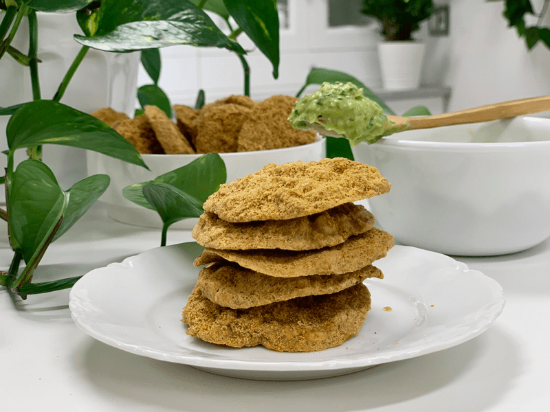
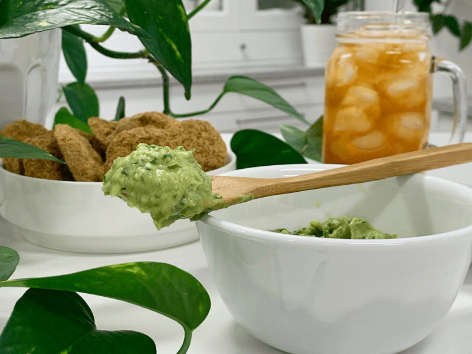
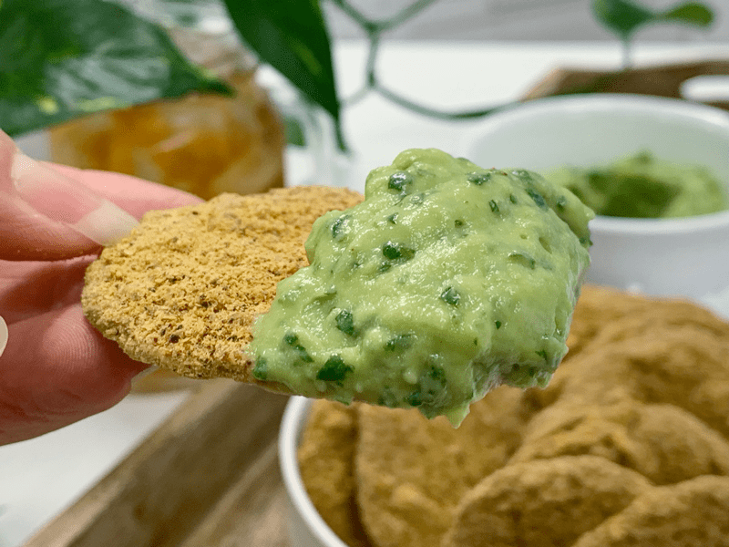
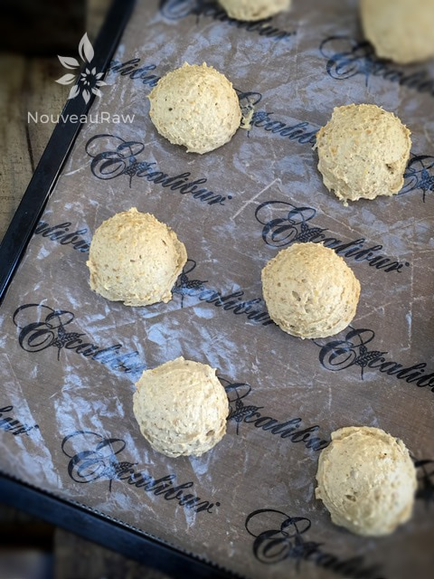
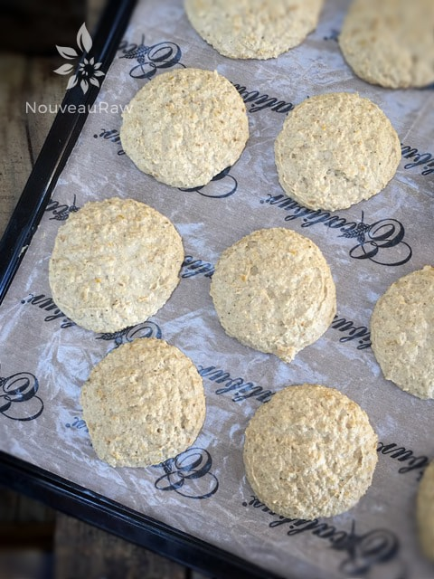

Nacho Chili “Cheese”Corn Chips
raw / vegan / gluten-free
This is my take on Doritos. I am not going to claim that they taste 100% like them or have that light, crispy snap, but these chips deliver a powerful crunch that unlocks bold and unique flavors. They are a hearty corn chip topped with a cheesy chili flavor. Downright scrumptious in my book! I did a little research regarding Nacho Cheese Doritos, one of my all-time favorite chips growing up.

Remember how they would leave your fingers sticky with something that looked like radioactive bee pollen? Just what is in that stuff that made a person keep going back for only one more chip? Thirty-nine (39!) different ingredients are used in creating these chips. After identifying a few different kinds of cheese used, the cast members come into play; dextrin, maltodextrin, dextrose, flour, corn syrup solids, corn oil, soybean oil, cottonseed oil, and sunflower oil.

A few of those are partially hydrogenated, meaning they give the chip a longer shelf life and inject you with a little shot of trans fat. The seasoning blend includes sugar, “artificial flavoring,” and monosodium glutamate (MSG), which is a flavor enhancer.
MSG is known to interfere with the production of an appetite-regulating hormone called leptin. I think it is safe to say that my Doritos eating days will continue to linger in my past, distant memories. Raw corn chips have always been tricky for me to master. There always seems to be this inherent underlying bitter flavor to them, which I always believed to come from the corn. So I set out on an experiment.
Today’s secret ingredient… dried corn!
I actually did many different steps while creating this recipe. I haven’t experimented with other techniques, so I am not sure what the outcome would be if you skipped any of the steps below. It’s all about experimenting! But, I will say that I am thrilled with the outcome of this chip, and I will duplicate the steps again when I make future batches.

So, in this recipe, I soaked the corn overnight in salted water. I was curious if this would help take away that bitter flavor. I didn’t have anything scientific to back this up, like I said, experimenting. After soaking, I dehydrated some of it. See here. My second wild and crazy thought was that maybe by adding in some dehydrated kernels, it would not only give a good texture but perhaps deepen that definite corn flavor. Anytime you dehydrate fruits and veggies; the flavors tend to concentrate. That was my theory, and I am sticking to it. Haha, You can read through the ingredient list and the preparation instructions to see what else I did, but let me leave you with this…
These crackers turned out thick, crunchy but a hint of chew in them (from the dehydrated corn), I didn’t detect any lingering bitter corn flavor after eating them, and the chili “cheese” coating caused me to rejoice! Just like when I was a kid, I sucked on the chip, savoring that “not-so-radioactive-bee-pollen” coating…. then enjoyed the remaining chip, finding myself gnawing the rest of the chili “cheese” coating off my fingertips. It’s a winner! I apologize for being so “long-winded” here; I am just excited to share this with you!
Update: I have made these chips many times over. I experimented with stirring in the extra dried corn nibbles into the batter (as I did the first time I created them.) And I have blended those dried corn pieces all together so I wouldn’t have any lumps in the chip. In the end, I love the chip with the dried corn lumps. They had more pockets of flavor and crunch.
 Ingredients:
Ingredients:
Yields 54 chips ( 1 1/2 Tbsp per chip)
- 3/4 cup water
- 2 Tbsp lemon juice
- 4 cups organic corn, fresh or frozen
- 2 cups cashews, soak 2+ hours
- 2 Tbsp nutritional yeast
- 1 Tbsp + 1 tsp chili powder
- 1 tsp Himalayan pink salt
- 1/4 tsp ground black pepper
- 1 large clove garlic
- 3 Tbsp sliced green onion
Hand Mix:
Coating:
Preparation:
- Prepare 2 cups of dried (dehydrated) corn ahead of time. Read how here.
- Soak the 4 cups of fresh or frozen corn in enough water to cover them, adding 1 Tbsp sea salt. Stir together, cover, and allow it to soak overnight in the fridge.
- When ready to use, drain the water. Don’t rinse.
- Soak the cashews for two or more hours to soften them for blending.
- After soaking, be sure to drain and rinse.
- In a high-powered blender, add the following ingredients in this order: water, lemon juice, fresh corn, cashews, nutritional yeast, chili powder, salt, pepper, garlic clove, and green onion. Blend until creamy.
- The purpose of adding them to the blender in this order is to make sure the wet ingredients are on the bottom, which will help the blades in the blender move more freely.
- I have a Vitamix blender and use the tamper to help push the ingredients into the blades.
- Pour the mix into a large bowl and hand mix in the dried corn and flax meal. Mix well.
- Using a cookie scoop, level off the scoop with batter and stagger on the teflex sheet that fits the dehydrator tray. After the tray is full, pick it up by the bottom two corners and lightly tap it down on the counter to flatten the chips. Do this on all four sides.
- Dehydrate at 145 degrees (F) for 1 hour, then reduce to 115 degrees (F) for 5 hours, remove from the teflex sheet and place them directly on the mesh sheet.
- Continue to dry for 20 hours or until dry.
- Once they cool to room temperature, they will firm up a bit more.
Coating the chips:
Ziplock style:
- In a Ziplock bag, add the nutritional yeast, chili powder, and salt. Close the bag and shake to mix the spices.
- To coat the chips, do ten at a time.
- Dip the chip in a glass of water, just a quick dunk, and place it on a towel.
- After you have ten done, put them in the ziplock bag, close it, and gently shake the bag. This will coat the chips.
- Take each chip out, and place it on the mesh screen that comes with the dehydrator. Dry at 115 degrees (F) for 1 hour.
- Store in a glass container on the counter for up to two weeks.
Spray bottle style: (my favorite way)
- Mix the nutritional yeast, chili powder, and salt in a large bowl.
- Spray each side of the chip with one spritz of water.
- Toss in bowl and coat both sides. Tap the excess powder back into the bowl.
- Place it on the mesh screen that comes with the dehydrator. Dry at 115 degrees (F) for 1 hour.
- Store in a glass container on the counter for up to two weeks.
P.S. you will have leftover coating spices. If you enjoy popcorn, this is amazing sprinkled over that.
Culinary Explanations:
- Why do I start the dehydrator at 145 degrees (F)? Click (here) to learn the reason behind this.
- When working with fresh ingredients, it is important to taste test as you build a recipe. Learn why (here).
- Don’t own a dehydrator? Learn how to use your oven (here). I do, however honestly believe that it is a worthwhile investment. Click (here) to learn what I use.

After placing the scoops of batter on the dehydrator tray, pick up the bottom two corners of the tray and start tapping the whole tray on the countertop. Keep rotating the tray and tapping. This will slightly flatten them organically.

Here they are ready for the dehydrator. I forgot to take a picture of what they look like afterward.
© AmieSue.com